There was a time, long before compartmentalized special access programs, that other people created their very own secret organizations. These programs operated outside of government control, and oversight. In fact, during the last century, the United States was full of these “fraternal” organizations. Most of which operated with a secret side. And most, of which, were men-only membership and required rituals to join, and tasks to complete. All in secret. Here we look at one of them; the Dellschau flying machine project.
Secret Organizations…
These other people, and these other organizations, created societies with membership, and worked those programs to their conclusions. They kept all of their activities secret. They took “blood oaths”, and policed their ranks. They held belief in causes greater than themselves. They toiled and worked, and then moved on.
Sometimes the objectives were political in nature. Such as to “liberate” a land or a people. Sometimes the objectives were social, as to provide an outlet for fun and debauchery where the prying eyes of the “lesser sex” could be safely occluded. And, yes, sometimes the organizations revolved around devices, inventions and adventuresome activities.
These organizations would often hold meeting in secret, and rotate the locations. They would elect members, and would enforce initiation rituals and codes of secrecy. They would hold meetings, of which members would repeat and enforce codes of behaviors and rituals shrouded and cloaked in the arcane.
Often they would have secret handshakes, and special symbols and behaviors that only other members would recognize. Such as rings, ways of tying their shoelaces, pins and badges and other behaviors that would be ignored by the uninitiated.
The secrecy was considered important, as it was strongly believed that the “average person on the street” were just simply “rabble”. As such, the “better” people of society needed to operate the “levers” of control away from the prying eyes of the well-intended ignorant.
When they would meet, they would often wear special regalia. This might include cloaks, hats, and other adornments. They would wear these elements over their normal everyday clothes. As there were an inherent hierarchy present in these organizations. And traditions, rules and laws needed to be followed to “the letter”.
Time moves on…
Over time, many of these organizations died out. While the larger ones became something else entirely.
They expanded their membership to include women, then children. Then gays. Then LGBT, and now today anything that can apply and pay the fee can join. It’s for “diversity”, you see. It is for “equality”, don’t you know. It’s for a better world, to protect the children, and other such themes…
The larger ones became social clubs, where you could combine low-priced alcoholic drinks with community daycare. (After all, what better way to meet with friends and associates that over some beers and song, while the kids are watched over in the next room?) They developed “play rooms”, bought pool tables, and would rent out the social halls for a profit to fund building maintenance.
Such is what happens when your membership can be all inclusive. Everyone can join, and the standards are lowered to zero to accept everyone.
Many of these transformed organizations are well known today. We have the VFW, the Lions, the Elks, the Moose, the Polish Falcons, and many others. Today they are considered an anachronism. They are considered nothing more than a holdover from a “barbaric” time when men needed to gather and discuss “trivial” matter of local society.
We have all forgotten why they were founded in the first place. We have forgotten the society from whence they sprung up from. We have forgotten their importance, and in our rush to “modernize” them, and make them more “progressive” by opening up membership to everyone and every thing, we have lost something valuable.
We have lost our history.
What remains…
Yes. Over time things have changed. In many cases, the members died, and at their death the secrets that these programs held went with them to their graves. The organizations, their membership and their objectives become forgotten. Only the relics remained.
Relics that were themselves often discard and misidentified by the few whom blundered upon them. “Oh, that’s just a flag of some para-military organization that your great great grandfather belonged to.” or, “I don’t know what that crazy knife is. It’s probably just a fancy letter opener”. Or, better yet a strange “tapestry” with strange symbols and an unusual motto in Latin, might be found and then “cleaned out” by a well-meaning but wholly ignorant relative.
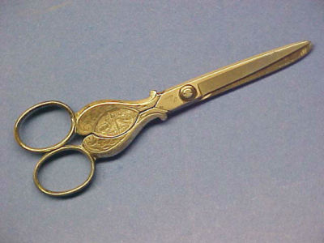
This should come as no surprise.
We all have heard about the “ The Masons”, and “The order of the golden dawn”, and many, many others. Some are relatively well-known, and weren’t really all that secret, such as the ‘Black Panther” movement of the 1960’s and 70’s. But some were so secret, that when they disbanded, all that remained were some dusty scraps of mystery.
Yes, some of the secret organizations come out of the shadows and make their appearance from time to time…
But what of the secret organizations that continue to remain hidden? What of those?
What of these still secretive organizations?
These are secret organizations, set up at the time of the loyal order of Elks, or other fraternal societies. These are organizations where members can join, and become involved in something far bigger than themselves. Members can become part of an organization that can control the life and direction of mankind, in their own unique and secret manner.
Let’s look at one of these long forgotten, but highly secretive organizations. Let’s look at the “Dellschau Flying Machines”.
Introduction to secrets and disclosures
Everyone has secrets. For some, it is the cookies that you stole from your grandmothers house. For others it is a dark past that you try to keep buried and hidden. For others, it is being part of a secret society. A secret society.
With that in mind…
Let’s look at the secrets of a neighborhood butcher. For it is a great story, and involves the dreams and adventures of manned flight at a time with it was considered an impossibility to fly. For at that time, “everyone knew” that man could never fly.
"If man were meant to fly, he would have been born with wings"
- William L. Shanklin
Yah. Everyone knew.
Just like today. “Everyone knows” that there is no such thing as extraterrestrials. Everyone knows that if the government discovered intelligent aliens that they would announce it to the world, and that the world would rejoice in happiness and rainbows (with the possibility of dancing unicorns, thrown in for good measure.)
Everyone knows this. Even the anointed one; (former) President Barrack Obama (the first) said that there is no such thing as extraterrestrials. He told the world this while he was on that very important television show; the Ellen DeGeneres show.
Anyways…
This story is one shrouded in mystery, and almost lost forever. It is a story intertwined with secret societies, hidden codes, otherworldly theories and seemingly impossible inventions. It is a story that place at a time, long before man even dreamed of flying in automated mechanisms.
It is the story of a dream, and an obsession of a man, or a group of men, all toiling in secret. To everyone else, however, Charles Dellschau had only been known as the grouchy local butcher.
He was nothing more than that. Or… was he?
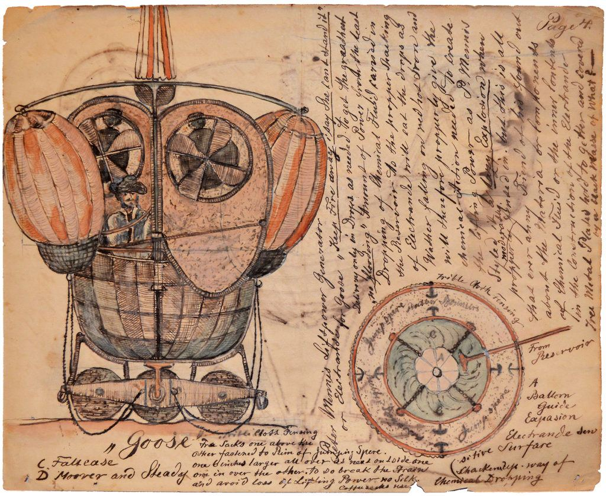
A discovery in the junk
This is a story that was unseen for decades until it was salvaged by a junk dealer in the 1960s. It all began with a trash heap outside a crumbling house in Texas. This is the story of an entire body of work that would later go on to marvel the intellectual world.
It all began in 1969, when a used furniture dealer named Fred Washington bought 12 large discarded notebooks from a garbage collector.
He brought them to his warehouse. There, among the clutter and dusty odds and ends, they found a home. I am sure that there were boxes of old men’s magazines, vintage fishing tackle, and dusty vintage pictures of cats with big eyes, and clown portraits resting everywhere. They fit right in.
He must have thought that they were an interesting curiosity. As he kept them lying around in his warehouse. Eventually finding a new home in the corner under a pile of dusty carpets.
Of course, junk stores are frequented by starving students and their ilk. They need to find cheap apparel, inexpensive furnishings, and curiosities to outfit their dorm room or apartments. As such, many younger kids would come in to the store to look around and browse.
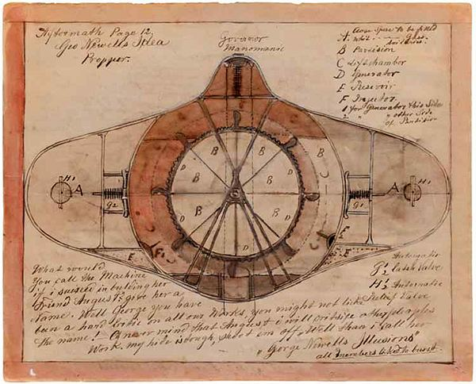
An art student takes a look at the work
In 1969, art history student, Mary Jane Victor, was scouring through his bazaar of antique furniture and brick a brack castaways when she came upon the notebooks. As she brushed off the dust from the covers, she could clearly see that the work was truly unique and very, very special.
This was not some mass-produced ancient harmonica. This was not your run-of-the-mill lamp, artwork made out of dried macaroni, or a broken lava lamp. No. This was unique. It was not mass produced. It was custom made, and obviously one of a kind.
These notebooks became known as “the mysterious works of a Charles Dellschau”.
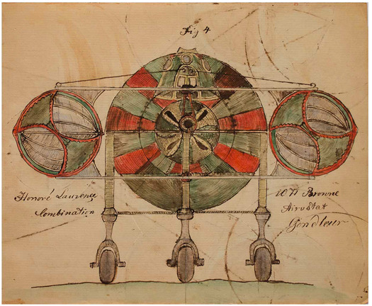
Inside the scrapbooks she discovered a remarkable collection of strange watercolors and collage pieces. They were beautiful and amazingly detailed. And yet, and yet, there were boxes and boxes of these books. As she looked, she would remove a book, only to find yet another under it.
When she asked about purchasing the books, the junk dealer gave her an outrageous price. Indeed, this was most especially outrageous for a “starving” art college student. He asked for around $2000 dollars for everything. This was equivalent to $13,775.26 today. (Calculator HERE.)
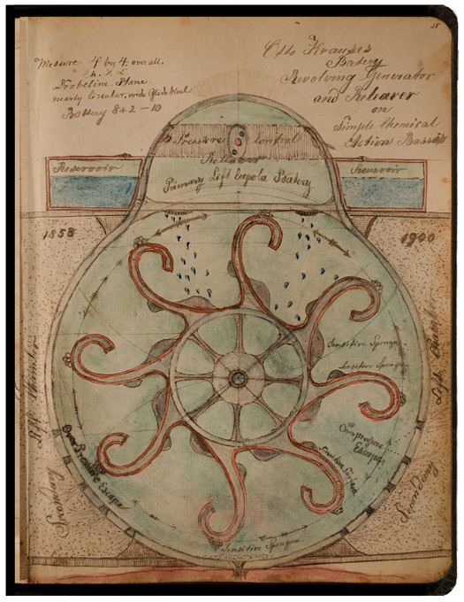
What’s an art lover going to do?
There were more than 2,500 intricate (and detailed) drawings of flying machines alongside cryptic newspaper clippings filled the pages, crudely sewn together with shoelaces and thread. It was a work of art, and if she (as someone who appreciated it) wouldn’t purchase it, then who knows what would happen to it…
A patron of the arts becomes interested
In frustration, she discussed this matter with her friends. Maybe she smoked some of that devil “weed” and listened to Janis Joplin in the process. Who knows? What we do know is that she felt the need to “rescue” the works that she discovered.
Mary Jane immediately notified the Art Director of her school, a Mr Dominique de Menil, of Rice University. He was not only a major influence in the art world, but was also Houston’s leading fine art patron. He immediately snapped up four of the books for $1,500. Where he wasted no time to put on an exhibition at the university entitled, “Flight”.
With that, Mr. Charles Dellschau, a Prussian immigrant had finally been discovered, nearly 50 years after his death in 1923.
But…
The question remains; what was he? Was he a visionary? Was he an artist? Was he a scholar? Was he an inventor? What the heck was he, and why did he devote so much of his life to such an endeavor?
Mr. Charles Dellschau, a Prussian immigrant
He had arrived in the United States at 25 years old from Hamburg in 1853. Documents show he lived in both California and Texas with his family, working as a butcher.
He retired in 1899, at the ripe old age of 71 years.
As an old man, he took to filling his last days by filling notebooks with a visual journal of his youth. In fact, for the remaining years of his life, he apparently locked himself in the house (more or less) only leaving when absolutely necessary. He found comfort and solace in his house, among his belongings. As such, we would spend his time, not by watching “Laugh In”, but rather working on his autobiography.
He called the first three books, Recollections and recounts a secret society of flight enthusiasts which met in California in the mid-19th century called the ‘Sonora Aero Club’.
How’s that for a mouth full?
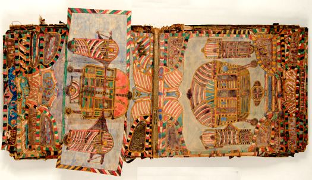
The books are an autobiography of a secret society that he belonged to.
The books are many things, but fundamentally they are an autobiography of his early life, and notations from a secret organization that he was part of. As such, there is no question at all about it. His autobiography is a strange one.
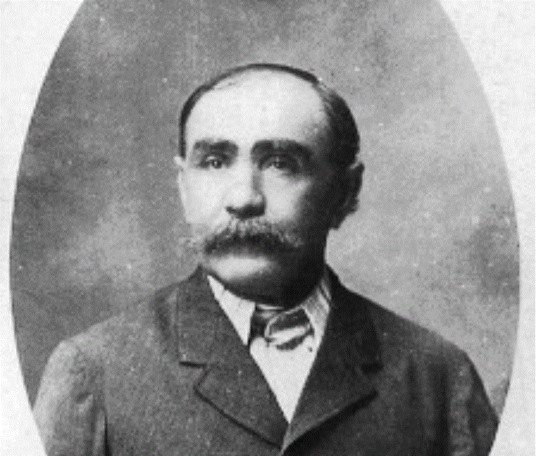
In fact, it is heretical. He claimed that flying machines were not only invented, but perfected, after the American Civil War. He showed the various designs, and discussed ways and means (mechanisms) to solve the various issues that arose when operating those machines.
The Wright Brothers wouldn’t even make their famous first flight until 1903. Yet, yet… Dellschau draws dapperly-dressed men piloting brightly-coloured airships and helicopters with revolving generators and retractable landing gear.
Aside from this body of work, no other records have ever been found of the Sonora Aero Club. And, a study of Dellschau’s artworks hide a secret coded story. Inside the art and the strange designs apparently lie evidence of secrets and private stories.
Whatever it was that he had to say was apparently too private even for his own notebooks and even today, much of the mysteries has yet to be revealed.
Enter Mr. Pete Navarro
A Mr. Pete Navarro, graphic artist and UFO researcher, heard about the “Flight” exhibition in 1969 and became enthralled.
He believed there was a connection between Dellschau’s drawings and another mystery. This other mystery was the mysterious mass of “airship” sightings that occurred all over the United States at that time period. Indeed, at the turn of the century, there were mysterious sightings all across a swath of states. This included a full 18 states that ranged from California to Indiana.
In 1972, he discovered that 8 remaining books of Dellschau were still sitting at the junk shop, unwanted and unclaimed. He bought the lot for $565 and spent the next 15 years obsessively decoding Dellschau’s work.
Most importantly, Dellschau never drew himself aboard the fantastical aero inventions. Instead, he only represented himself as the club’s scribe/ record-keeper, rather than as one of its inventors or pilots. At which we have the answer to the mystery, though no one wants to believe it. That these drawings are the sum total of the records of that secret organization.
The designs
In a study of the work, you can see many, many various designs and inventions. In fact, there are as many as 100 designs for airships with names like the Aero Mary, the Aero Trump and even an “Aero Jourdan”.
The mission
The club’s secret mission? To design and build the first navigable aircraft using a secret formula he coded as “NB Gas”. This “NB Gas” enabled the airships to negate gravity and drive the ships mechanical devices. They could actuate the wheels, side panels and compressor motors. This is pretty amazing that this all took place during an era when air travel was still viewed as a mystical impossibility.
Gases that are lighter than air include water vapor, methane, hot air, hydrogen, neon, nitrogen, ammonia and helium. These gases have a lower density than air, which causes them to rise and float in the atmosphere.
A dark side
Some of his drawings tell of fatal crashes of the society’s airships.
While others talk about sabotage of other club members and the banning of members who talked about the secret organization to outsiders. According to Dellschau, the club’s aero prototypes would travel the open roads disguised as gypsy wagons to avoid detection.
Imagine that! The vintage UFO’s would be carted on the contrivances of the day and ride on the roads in plain sight of the common village-people there.
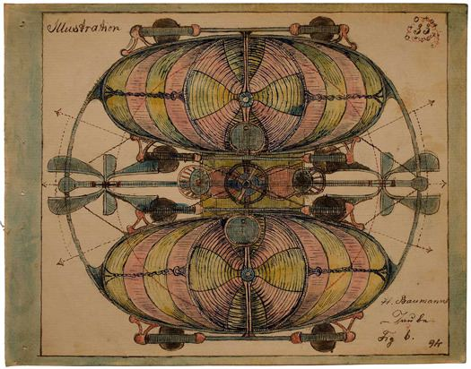
NYMZA
In the notebooks’ strange code of germanic lettering, Pete Navarro found a phrase that translated as “NYMZA”. Dellschau reveals this to be an even larger secret society that allegedly controlled the Sonora Aero Club branch.
Based on Navarro’s findings, UFO theorists have come up with some far-fetched speculation that the NYMZA was in fact an extra terrestrial entity. (Thus lending ammo to the idea that UFO theorists are all bonkers.)
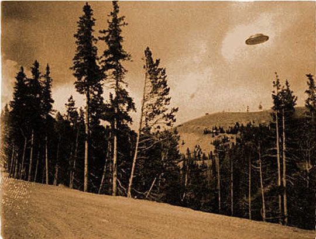
Secondary sources
While Navarro rubbished those claims, he did manage to find some supportive evidence. He found press clippings in Texas archives linking one of the names of Dellschau’s secret society members to an article published in 1897 about a local airship sighting.
The San Antonio Daily Express article identified one of the airship’s mysterious occupants as Hiram Wilson. Now Hiram, who according to witnesses, revealed that his airship design came from someone else. He claimed that it came from his uncle named Tosh Wilson.
Amazingly this Tosh Wilson was the very name Navarro had found mentioned in Dellschau’s watercolours as a Sonora club inventor.
To crazy to believe?
But even Navarro, despite his exhaustive research, had his doubts about Charles Dellschau’s story and how much of it was fiction. Were they tall tales to keep an old man entertained? Or were they true accounts of his youth, perhaps innocently exaggerated here and there?
Fiction or not, a single page from Dellschau’s notebooks could fetch as much as $15,000 in the late 1990s. Today, Navarro is no longer in possession of his books; he sold them off in need of some cash to museums, galleries and private collectors in Texas, New York and Paris.
And now, today, all that remains is an occasional Internet posting and a Wikipedia entry.
The Back-Story
How did the books end up in a trash heap in the 1960s in the first place?
Well, it turns out that the books had been hiding in Charles Dellschau’s attic where he lived and worked much of his life. They just sat there, forgotten and collecting dust. When he died, they continued to lie there. They grew dustier with time, and long forgotten.
Life moved on.
Seasons came and went. Wars came and went. After World war I, came the “Great Depression”, and that was followed by World War II. Then came the Korean War. Then, after that came the Vietnam war. By the end of the 1960s, the remaining family members, an Anton Stelzig, the husband of Dellschau’s step-daughter, was living in the house.
In the 1960s he, and his two ageing sisters, had a nurse to care for them. (It’s what often happens when you age.) The nurse would come in, make meals clean the house do laundry, and then leave.
As part of this care, the house and living arrangements needed to be assessed by the government. As such, the department assessed that the house was a hazard and ordered that it be cleared of debris. It was a cluttered mess of brick and brack from at least three full generations. We can well imagine the mess of stacks of papers, boxes of old clothes and rubbish that defied explanation.
The nurse was given the task of “cleaning-up”.
Her way of doing things resulted in many of the family’s treasures being thrown out onto the street. She just picked the stuff up, hauled it out and set it on the curb. Everything went. It was a “fire sale” of three generations. Everything went, including Dellschau’s books. Anton’s grandson Leo, painfully recalls the nurse saying, “I took care of that mess and cleaned it all up.”
Some of Dellschau’s work is still believed to be missing, probably lost forever.
In 2009, Pete Navarro finally published his co-written The Secrets of Dellschau, revealing a lot of the script he had decoded from the books. Four books still remain in the Menil Collection, locked in a humidity-controlled room. Researchers continue to unearth new pieces of information through surviving relatives.
Another Dellschau enthusiast, William Steen, obtained the aviation enthusiast’s journals in the late 1990s which included details of [1] a secret club boarding house, with [2] a bar and [3] dining room where the society would have meets, dream up their newest flying machines (and probably just have a bit of guy time)!
“The more details I see about Dellschau, the more convinced I am that a great deal of it is highly possible,” he told the Houston Press. “Even though it’s fantastic, it’s more than just fairy tales.”
Other Mysterious Airships at the turn of the century
Back at the turn of the century, people would see strange things in the sky. They did not call these items UFO’s. No. Instead, they called them something else. They called them “mystery ships that sailed in the skies”, or “Mystery airships”. Despite numerous reports of sightings, and claims of responsibility by mysterious inventors, none of the aircraft were ever discovered.
March 1880
The first report that is known, dates from 29 March 1880. It was found in the Santa Fe Weekly New Mexican. Although it could be fictional, there is a core of credible reports that indicate that the mystery airships cannot be entirely dismissed as hoaxes.
1892
In 1892 there were a series of reports of airships on the German-Polish border. The airships were seen to hover and even fly against the wind – impossible for known airships at the time. Four years later the airship wave took off.
November 1896
Mid-November 1896 saw several reports of mysterious airships over California.
Fast-moving (or sometimes stationary) nocturnal lights were seen over major cities, and spurious claims were made on behalf of “inventors.” The stories fizzled out in December, but the following February more reports came from Nebraska.
Two witness described a conical craft with wings and a fan-shaped rudder.
April 1897
Reports of airships soon spread, and by April reports were coming from much of the region.
Stories circulated, once again, of inventors exiting their craft and confided in witnesses.
It is easy to dismiss these stories of inventors as fictitious. In today’s society, most people are totally oblivious to the fact that back then people had no desire for fame to the extent that they do today. We automatically assume that everyone yearns for fame like they do today. It’s a barren assumption bases on ignorance.
The Dallas Morning News of April 19, 1897 reported that an airship had crashed in Aurora, Texas, and its “Martian” occupant had been buried in the local cemetery.
1909
Although this wave of reports would eventually die down by May, there was one more wave of sightings to come. In 1909 airships were reported in the United States, the United Kingdom, Australia and New Zealand. This is known as the British airship wave.
This wave of airship sightings mostly consisted of fast-moving cylinders with strong lights. Given the time period, they were blamed on German spies. In the Untied States the US sightings were blamed on a Mr. William E. Tillinghast of Worcester, Massachussetts.
Tillinghast was apparently blameless.
After the first world war, reports of mystery airships
largely died out, but sporadic reports were made of cigar-shaped craft with
propellers or fins in Kentucky (1927), California (1946), Kansas (1952) and New
Mexico (1967).
A great write up on the codes
The following is from Lexicon. They discuss the codes and how they were cracked and what they have to reveal. It’s a pretty good and detailed, not to mention, interesting article. I placed it here so that it will not be lost in the annals of time. All credit to the respective authors, and note that the text is copied exactly as presented (broken into paragraphs for easier reading) and placed on a pink background.
I urge the reader to visit the Lexicon Magazine website as there are many, many illustrative pictures and diagrams that go along with the text narrative.
I would also like to take a step back and put up my hands and say that this study is far too in-depth for my own understanding and is placed here for those interested in such a level of investigation. Enjoy.
PROLOGUE:
“Charles A.A. Dellschau’s Aporetic Archive” * by Thomas McEvilley
The Fate of Charles A.A. Dellschau’s (1830 – 1923) Work After His Death
For forty years Dellschau’s thousands of Plates moldered in the darkness of a closed attic, gathering dust. The only intrusion known to have taken place was when a male child of the Stelzig family became curious about the Dellschau books and rummaged through them.
Sometime in the 1960s there was a fire elsewhere in the house, and a fire inspector said to clear the debris out of the attic. So, after four decades in the secret dark, gently wafting the aura of twenty years of solitary late-night concentration into the depths of shadowy and slightly sinister corners, over the pieces of sad furniture with sheets flung over them and gathering dust, Dellschau’s life-work was carried unceremoniously out into the light of day and literally left in a heap in the gutter. (It was born into the gutter, you might say.)
So the first venue for Dellschau’s oeuvre was his bedroom; the second, an attic; the third, a heap in the gutter.
From this point there is uncertainty, and two versions have emerged. First, that a furniture refinisher named Fred Washington, making his rounds to see what people had thrown out, found Dellschau’s stuff and took it to his shop in Houston, called the OK Trading Post. Another version adds another pair of hands and another transaction. The heap in the gutter, on this account, was taken to the dump by a garbage truck. In the junkyard a nameless picker found it and sold it to Fred Washington for $100.
In any case, the story is that once Washington had Dellschau’s things in his shop they spent some time under a stack of old carpets or, in another rendition, tarpaulins. Before long they were discovered by a browser who recognized them as artworks of some kind, and then the books began their wanderings through the artworld and its levels of society.
The find made under a pile of carpets in the OK Trading Post was talked about a bit and began to be split up and moved in various directions—mostly upward (through the classes).
Four of the twelve books were acquired by the Menil Collection, in Houston, which had previously shown some interest in outsider art.9 Fred Washington sold the other eight books to a man named P.G. Navarro, who is an interesting figure in the story. Navarro was a practicing commercial artist in Houston who in his spare time had developed as a hobby an investigation of certain reported airship sightings.
These mysterious airship sightings occurred in the late 1890s first in Northern California (not far from Sonora), then throughout the United States but especially in the Southwest and Texas. The phenomenon was known in the press (not only in Texas) as the Great Texas Airship Mystery.
Navarro was studying the airship mystery at the time Dellschau’s books were discovered in the OK Trading Post, and it occurred to him that the Dellschau material might somehow be a part of it. Perhaps at first Navarro didn’t know about the Sonora Aero Club and assumed that the Aero drawings referred to aeronautical events around the turn of the century.
You’ve got to admire this sensible guess, and as he started to carry it out it became even more admirable. Navarro filled several notebooks with his findings, and these pages are exquisite in conception and execution; his obsessive concentration on order and neatness was not so unlike Dellschau’s own. Dellschau’s aesthetic is more expressive—meaning somewhat looser and more gestural—whereas Navarro’s notebooks are “expressive” of rigid order—more or less a contradiction in terms.
Perhaps Navarro appreciated Dellschau’s books as artworks. In any case it is clear that for one reason or another—maybe aesthetic, maybe spiritual, maybe as a search for something he couldn’t exactly name—Navarro felt a strong attraction toward the Dellschau material.
It almost seems he got into a folie à deux with the long-dead Dellschau; in his notebooks, Navarro redrew many of Dellschau’s pages, carefully and in detail. He worked many long evenings to decipher coded messages he found there in what looked vaguely like alphabetical symbols, as seen in Plate 1631 (at left), but from some other tradition. Navarro says Dellschau used a simple one-to-one substitution code and claims to have worked it out.10
He worked on this hobby for thirty years and became something of a philological scholar in the process. He is still alive now at age ninety-three, the age at which his ego-ideal Dellschau died. At some point Navarro sold four of the eight Dellschau books of drawings in his possession to the San Antonio Museum Association; two went to the San Antonio Museum of Art and the other two went to the Witte Museum, also in San Antonio, a museum devoted to South Texas culture. His remaining four books ultimately entered the art market and ended up in various hands.
DM = XØ
Present in many of the plates of the works of Charles Dellschau are character-like symbols that look as if they are based to a degree on letters of the Greek alphabet. It is not clear to what end these only semi-recognizable characters are used. A formula that is on many of the Plates looks almost like ¯ DM = XØ but not quite. The two letters on the right of the equation look more like chi and phi from the Greek alphabet than like X and O from the Latin alphabet. The formula ¯ DM = XØ has a horizontal dash entering the D around its middle, from the left, and a diagonal line from upper right to lower left through the O. And of course D and M are both in the Greek alphabet, too. Delta mu = chi phi? It may be Dellschau didn’t leave enough clues to figure it out. Maybe it has something to do with Peter Mennis, as on Plate 2003 (as described by P.G. Navarro in his “Books of Dellschau”) are the words: “Have you never heard of P. M.’s goose and heir offspring DM = XØ—Peter I haven foregot you!”
Navarro thought he had worked it out in Dellschau’s code so that DM = XØ translates into NYMZA.
In his interpretation the five elements refer by code to a mysterious organization, perhaps operating from Germany, that was the sponsor or secret director behind the activities of the Sonora Aero Club. There is in addition one drawing (Plate 2550) that is signed, “a DM = XØ Club Debate Studia . . . Drawn by CAA Dellschau.” Studia is the term Dellschau used for a model or study or artist’s proof. So: this is the Study-Model that came out of a Sonora Aero Club debate.
But of couse Dellschau treated the right side of the equation as if it was the Latin letters X and O, and didn’t consider the problems about those letters mentioned above.
CODEX to unlock the cipher:
He translates the ciphers as (left side, top to bottom) P, O, N, M, L, K, I, H, A, B, C, D, E, F, G and (right side, top to bottom) Q, R, S, T, U, W, X, Y, Z, CH, SCH, with the O used for double letters and no representation for J or V. By using this code, he claims the passages on the left and right edges of the drawing read “Now talk about your dirigibels” and “O yes we didden know nothing say.” P.G. Navarro, e-mail to Stephen Romano, July 30, 2012.
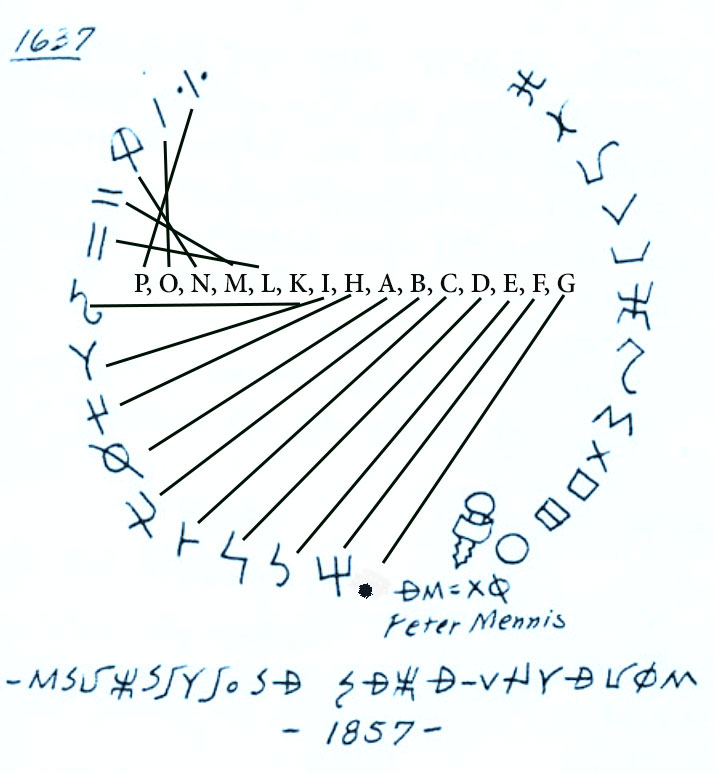
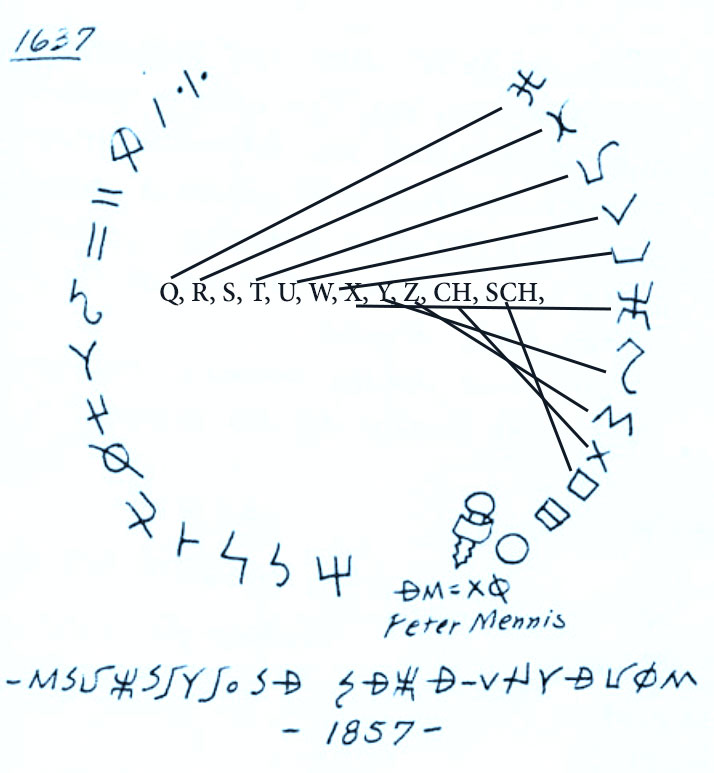
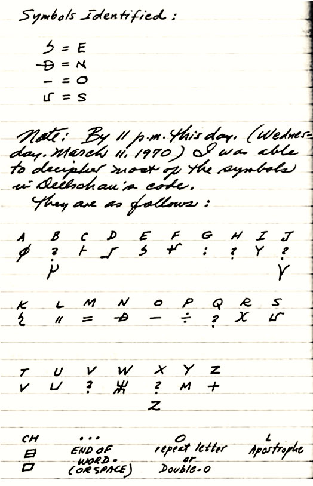
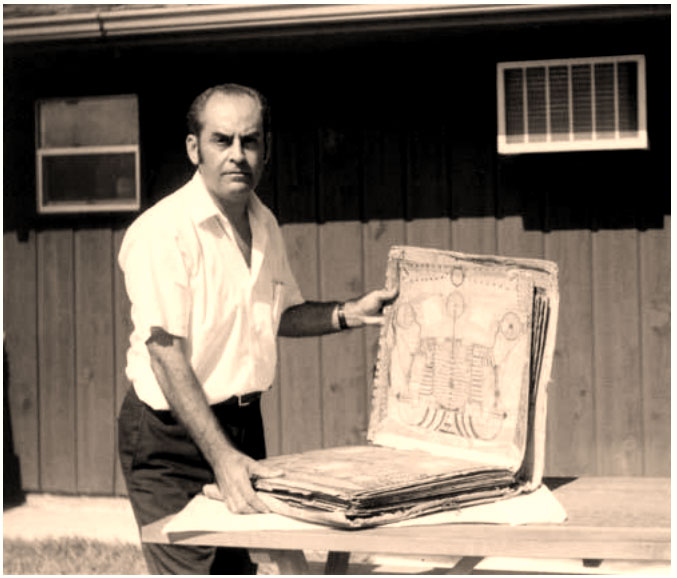
Extracted from “Empire of the Wheel III: The Nameless Ones”, by Walter Bosley
The Mysterious NYMZA In “Empire of the Wheel 1″, we presented evidence that extremist members of the Spiritualist movement were the most likely suspects involved with the deaths we associate to The San Bernardino Working of 1915.
In that book, it is revealed that the ancient goddess Hekate was central to the events surrounding deaths of four adults and three children.
The circumstances appear to have shrouded the identities of those involved. In EOW2, we extrapolated on the facts and possibilities by pulling a seemingly innocuous thread which ultimately revealed that an historical figure was at the center of events and offered a possible explanation as to why. Looming even taller in the background was the specter of a nameless string-puller, the difference now being the unexpected presence of an organization steeped in shadow and mystery but finally offering at least an apparent name:NYMZA/ NJMZa.
EOW2 already provides a very logical translation of the acronym NYMZA/ NJMZa. Here we must go a level deeper for therein is the thread through all we’ve presented in this book. Charles Dellschau NYMZA has multiple meanings, much like a hieroglyph. There is NYMZA the mysterious organization behind the airship mystery, according to Dellschau.
EOW2 attempts to translate this NYMZA according to Dellschau’s own description of it being an organization based in Germany and overseeing several airship builders in the United States, especially the Sonora Aero Club formed mostly of German immigrants.
This NYMZA/ NJMZa is also associated with the Great Airship Mystery of 1896, by this time also allegedly involved with known Spiritualist/ Theosophist investors and other players. It is here we can link NYMZA/ NJMZa to occult interests and not just via the Spiritualist scene in America but because of the German occult associations of the time.
However, in true occult spirit, the acronym is embedded with what may be the identity of the hand behind the secretive Germans overseeing the airship operations as outlined in EOW2.
NYM-ZA: The Sesh Heri Analysis In Sesh Heri’s 2008 novel Metamorphosis, second book of the Wonder of the Worlds trilogy, Ed Morrell explains the NYMZA to Jack London and the narrator of the story: “That member of the (Sonora) Aero Club had figured it out. He was a professor of ancient languages. He had studied Latin and Greek all his life, and he had also studied ancient Egyptian, Sumerian and Mayan. This professor told me that NYMZA was a very ancient word that predated all known languages but that it had survived into ancient Egyptian, Greek and Latin in somewhat altered forms.
For example: nomen in Latin and onyma in Greek are the words from where we derive our English word for name. But these Latin and Greek words were only derived from the older Egyptian nym which meant ‘who?’… “The word for ‘who?’ in Egyptian was related to several other words in that language that sounded the same…” “Homonyms,” Jack said. “That’s it,” Morrell said, “There were a number of words that were all pronounced something like nym, like the words for sleep, walk or stride, to do evil, wrongdoer, place of slaughter, slaughterhouse, execution, chamber, cellar… “They tell a story, a very ancient story.
It’s all about the ancient gods who once ruled the Earth.
They weren’t human; they were different kinds of creatures. They were amphibian. The Sumerians called these fish-men gods Annunaki – ‘Heavenly Ones Fallen To Earth’… The fish-men fought a war among their own kind and subdued the evil ones. What the fish-men did was confine the evil ones among them to a particular astral plane for all eternity… “That’s why all those nym words in Egyptian mean things like evil and slaughterhouse and cellar. The evil ones or wrongdoers, nymi, were put to sleep, nym, in a kind of cellar which could also be likened to a slaughterhouse, for although these evil beings continually walk or stride in that place of confinement, they exist in a kind of living death… “And should anyone ask about these evil beings who have been so confined in this living death, one can only reply who?, nym, for they are forgotten among the living… because their names have been taken away from them and this has cut them off from life…” “And that thing I encountered on the bottom of the ocean,” I asked, “You’re saying you think it was one of those old ones, one of those fish-gods, imprisoned on the astral plane long ago?”
“Yes,” Morrell said, “And not only that, but these things, the NYMZA, continually try to reach out to the minds of mankind and control us. Their ultimate aim is to escape from the astral plane and return here where they can once again rule according to all the evil that is in them. This NYMZA has been a manipulating force throughout the history of mankind on both Earth and Mars, and it was they who constantly interfered with mental communications going on between the Aero Club and some of the people on Mars… “They cannot build in the material world, but they can project their thoughts into this material realm through the minds of living things, especially the humans. Through such mental doors, the NYMZA hope to eventually escape their endless imprisonment.
That machine on the ocean floor is designed to rend the fabric of space and open an astral portal so those things can escape…” NYM-ZA or NYM-SA means specifically, according to Heri, ‘Name That Has Been Removed’ and he makes the distinction that this is the result of a punitive action. The‘cutting’ of the name was a revoking of a ‘key’, the name symbolizing the more important ‘identity’ or, as Joseph Farrell might say, ‘individuation’. This identity key is what, according to Heri’s interpretation, allows a being to exist on our plane, i.e. our material plane as opposed to the astral plane to which the ‘NYM-ZA/ NYM-SA’ were banished. Heri adds that the desire for these beings to possess a key drives them to seek possession of the identity of others, for the specific identity does not matter to them so much as simply having the key to return to this material plane of existence. It is in this desire for the ‘key’ of identity/ individuation that we may also find the motive for the possession of living bodies by disembodied entities, i.e. ‘demons’.
Consider the story in The Bible wherein Jesus encounters the man possessed by multiple demons. When Jesus asks for a name, the voice replies, “My name is Legion”. This apparent name actually refers to a multitude of entities possessing the man. Notice not one specific name identifying any of them by their personal identities is given but instead what Jesus is given is a group name. Heri argues that ‘Legion’ is equivalent to NYMZA/ NYM-SA. Had any of these entities retained an ‘identity key’, they would not need a living body to enter this plane of existence. Heri uses both his understanding of the phonetic cabala and modern words traced to ancient lexicons.
Confining his examples to English, German, Latin, Greek and ancient Egyptian, which can be demonstrated to be the sources for Greek and Latin terms. His source on the ancient Egyptian is Budge’s An Egyptian Hieroglyphic Dictionary (Murray, London, 1920) Pgs. 373-385. “-nym” is a suffix in English, i.e. patronym, pseudonym, etc. It refers to “name” as in the Greek onyma or “name”. Heri is convinced onyma came from the Egyptian word nem which meant “who?” Nem is a question concerning the specific identity of a person, the answer being their name. In ancient Egyptian, there were two words for “name”, being ren and ka. Nems means veil. Consider our context and remember this because we’ll bring it up a little later.
Ka is usually translated as “soul”, but Budge explicitly states that sometimes ka was used to mean “name”. This demonstrates to Heri a crucial link between the concept of the soul and the idea of a name. Heri argues that the Egyptian nem or “who?” entered the Greek language as onyma i.e. “name”. Now let’s bring the second syllable of NYMZA into the analysis. Heri believes the ancient Egyptian sa i.e. “cut” is the root of the “-ZA”. Thus nem-sa means “who? cut”. But then Heri points to nems, meaning to enlighten or illuminate in one usage yet “veil” in another. Heri thinks this hints at the “cutting off of illumination”. We shall return to this momentarily. Interestingly Heri points out that other nem related homonyms in ancient Egyptian mean “evil”, nehem “to deliver”, nehem-ra “to kill”, nemmta a type of fish. There are nem words relating to “lake”, “to bathe or swim”, “to sleep or slumber”, and “bedchamber”. This also extends to the Greek and Roman (Latin) nymphs, often associated with water; and the Greek nystagmos “drowsiness” derived from the ancient Egyptian nem in its aforementioned “sleep” association.
Now we go to the German nehmen “to take” which is also used to mean “to possess” or “to consume” as in “eat”. Heri is convinced that this can likely be traced back as well to the ancient Egyptian. He suggests nehmen might also be used to mean “to take someone” or possess someone. Returning to the second syllable of NYMZA once again, we have the German zahn “tooth” which relates to chewing or cutting, bringing it back to the ancient Egyptian sa. But Heri also points out the German zahllos “innumerable”, which hints at the aforementioned “legion”. Thus, according to Heri, do we have the following: NYM meaning “name” and ZA( SA) meaning “cut” NYM meaning the answer to “who?” and ZA relative to “innumerable” NYM-ZA meaning “without a name” or “nameless” Heri goes even farther to reveal the revelation that links his translation to our mystery:
a. Recall the nemmta or “type of fish” link to nem/-nym/ name? Remember the “lake” and “swim” associative definitions to nem?
b. Consider the “sleep” usage of the ancient Egyptian nem and its Greek derivative nystagmos “drowsiness”.
c. Now add the “possession” usage of the German nehmen which, if it is derived from the ancient Egyptian nem, provides yet more evidence for a NYM-ZA association. What does all this suggest to Heri? A nameless fish-like being sleeping under the water yet taking possession of something.
Does this sound familiar? It should.
Heri’s argues that his analysis reveals to him that the NYMZA are equivalent to Lovecraft’s Elder Gods from the stars whose priest-god Cthulhu sleeps at the bottom of the sea reaching out psychically to possess the minds of humans so as to appropriate their identities and capture the key necessary for the Elder Gods to enter our material plane.
That’s not all Sesh Heri has to offer as evidence. Heri argues that Nommo of the African Dogon tribe revealed the NYMZA presence on Earth.
Heri cites Robert K. G. Temple: “Nommo is the collective name for the great culture hero and founder of civilization who came from the Sirius system to set up society (civilization) on Earth.
Nommo – or, to be more precise, the Nommos – were amphibious creatures…” (Note 131) Nommo is a collective term, not a proper name. It does not mean any one particular personage, thus is essentially “nameless”. Nameless, amphibious or fish-like, gods from the stars. We won’t even go into what Jules Verne may have known, naming his legendary mystery man of the sea Captain Nemo… NYMZA: Their ‘name’ is ‘Legion’. They are numerous and ‘revoked of their identity key’ or ‘nameless’. Heri thinks this is their condemnation, but it may also be useful. If you lack an identity, you cannot be identified.
The Heri translation adds an unexpected element to the mystery. We have already provided an effective and valid German translation of NYMZA/ NJMZa in EOW2, so what are we to do with this new translation which also fits so disturbingly well? The answer is simple. Both may be right. Homonyms are the key. Words spelled the same yet having different meanings depending upon usage and context. Why not an acronym? Heri has already demonstrated a German association to the ancient Egyptian from which he derives his translation. We are dealing with Germans – specifically esoterically motivated Germans – all over this mystery. The implication is startling. NYMZA means NJMZa to the aero clubs yet it may also mean NYMZA ‘The Nameless Ones’ behind the nems. Oh, pardon us, we meant The Nameless Ones behind the veil, that definition of nems we told you we’d bring up again. Might the German NJMZa, as presented in EOW2, be the “veil” behind which hide the NYMZA aka The Nameless Ones?
Behind The Zodiac Killer and the ambush murders of Officers Christiansen and Teel are Nameless Ones. Behind the disappearance of April Pitzer and the murder of the McStay Family buried on a telluric current are Nameless Ones. Behind the murder of Harry Houdini and the Cthulhu Mythos are Nameless Ones. Behind all the mysterious shrines to Hekate and operational necromantic sites of the Inland Empire are Nameless Ones. Just as in EOW1 where we state that neither the reader nor we need to believe in the reality of these Nameless Ones, what matters is that the perpetrators of crimes in their honor believe in them, and to catch them, we must understand how they think. To catch them, we must identify them, in spite of their efforts to emulate their gods and remain without a face to put to their crimes. It is an ironic mirror image which these very real perpetrators anonymously commit atrocities in veneration of their gods who themselves are believed to remain entombed because they have been stripped of individual identities.
The nameless/ faceless punishment for one becomes the cloaking security for the other. Who are these Nameless Ones? Lovecraft would say they came from the stars aeons ago and remain on this planet to command their devotees in an objective of conquest. Now there’s an interesting possibility that may indeed have played a role in The San Bernardino Working after all. How? There has been one player in this melodrama that moved across the stage seemingly as a red herring. The circumstances suggested a greater hand in the events of 1915, yet the facts simply did not provide the necessary evidence to accuse this particular actor. Indeed, it appeared the truth stood in solid opposition to the natural assumption based upon the public persona of the individual – but now we know more. We must consider again the notorious Aleister Crowley.
EPILOGUE:
Extracted from
The Mystery of Flight- Hieroglyphica and American Visionary
We don’t know if the Sonora Aero Club actually existed, and if so, did these flying contraptions exist? If they did not, what was Dellschau’s purpose in creating thousands of coded illustrations? There are notes in his journal that one day the Wonder Weaver would break the code. If this was the case this might be the only evidence we have that Dellschau intended these works to eventually be released to the public, and evidence for why he devoted thousands of hours and literally decades to create them. But we still don’t know fully the message he intended to deliver. The process of learning about Dellschau and his Press Blooms somewhat resembles cracking the Mayan code, to a much lesser degree.
What we do know is that from revolutions to family deaths Dellschau’s life was struck with tragedy. During the end chapters of his life’s narrative he invested countless hours into creating artworks that reflected a period in his life that was between revolutions and love. We don’t know much about what he did during his first years in America, but when he began painting this Aeros he chose that time of his life to create this narrative— perhaps because it happened, or maybe because his family could not trace and reveal inconsistencies in his claims during those bachelor years. He was fascinated with flight and the use of codes and a secret society reveal that he was inspired beyond the science of aviation. As a butcher he daily dealt in the field of death. Even his Press Blooms are visceral in their dissection of the airship’s anatomy. And though he might never had ascended in an airplane by creating these works of art he transcended his life after death.
Charles A.A. Dellschau left us a great mystery to be solved, one that might be impossible to solve. As it has been the experience with Pete Navarro, Stephen Romano, and so many people who have come in contact with Dellschau’s work a sense of excitement and curiosity is aroused. The type a curiosity that takes one through countless hours studying Dellschau’s artwork to see if they can decipher the code. It is that curiosity that inspires mystics and magicians to delve into occult matters. It is the same curiosity that inspires man to defy the laws of nature and from his own creativity to manifest vehicles that can ascend beyond our limits. In the two-dimensional color plates height and width, the horizon and the heavens, reflect the formula for transcendence.
The third dimension, depth, is a line drawn inward to our own psyche.
At which I must conclude that all this code-breaking, discussions of Astral planes, and ancient creatures that wish to control humans are far, far, far beyond my experience. Information presented here is for your information, and possible consideration.
What you, the reader, should take out from this is simple…
Secret organizations exist and have existed in the past. They are involved in arcane knowledge and understandings that are far removed from that of the “common man”. Secrets do exist.
Further reading
This is an interesting subject, but beyond the scope of this blog. I suggest the reader follow up on this most interesting of subjects using the following links;
- A Strange Visit to the Grave of an 1890s Airship Occupant.
- The Advertiser (Adelaide, SA : 1889-1931), Monday 5 December 1910, page 9.
- Mysterious Airships and Phantom Flying Machines (comprehensive)
- Mystery airship
- The Mystery Airship of 1896
- MYSTERY AIRSHIPS OF THE 1800’s
Conclusion
The world is filled with secrets. The idea that everyone should know everything and that there are no secrets is a big lie. The world is filled with secrets, plots, and schemes. Some are run by diabolical megalomaniacs, while others are just extra-ordinary adventures that are eventually forgotten.
The most important thing that a person needs to take from this story is the idea that most people are unaware of the things that goes on around them. The idea of lighter than air vehicles were a reality at a time when the world’s renowned scientists couldn’t even contemplate human flight in any capacity what so ever.
As such, were someone desirous to tell someone their secret, it should not be to broadcast to everyone. Instead, only a select few would be offered the opportunity to know and be let in on the secret. The advantages of what ever benefits are derived from secret endeavors is NOT beneficial to the masses of humanity. Instead, they belong to a select few. These people would then use the knowledge to further advance mankind at a pace unencumbered by the sloth of the mass of humanity.
Other than that, it is probably just as well that the rest of the world be ignorant and forget that any secrets ever existed in the first place. And thus the world turns, and new lives are lived while others sunset.
MAJestic Related Posts – Training
These are posts and articles that revolve around how I was recruited for MAJestic and my training. Also discussed is the nature of secret programs. I really do not know why the organization was kept so secret. It really wasn’t because of any kind of military concern, and the technologies were way too involved for any kind of information transfer. The only conclusion that I can come to is that we were obligated to maintain secrecy at the behalf of our extraterrestrial benefactors.


MAJestic Related Posts – Our Universe
These particular posts are concerned about the universe that we are all part of. Being entangled as I was, and involved in the crazy things that I was, I was given some insight. This insight wasn’t anything super special. Rather it offered me perception along with advantage. Here, I try to impart some of that knowledge through discussion.
Enjoy.


MAJestic Related Posts – World-Line Travel
These posts are related to “reality slides”. Other more common terms are “world-line travel”, or the MWI. What people fail to grasp is that when a person has the ability to slide into a different reality (pass into a different world-line), they are able to “touch” Heaven to some extent. Here are posts that cover this topic.


John Titor Related Posts
Another person, collectively known by the identity of “John Titor” claimed to utilize world-line (MWI egress) travel to collect artifacts from the past. He is an interesting subject to discuss. Here we have multiple posts in this regard.
They are;